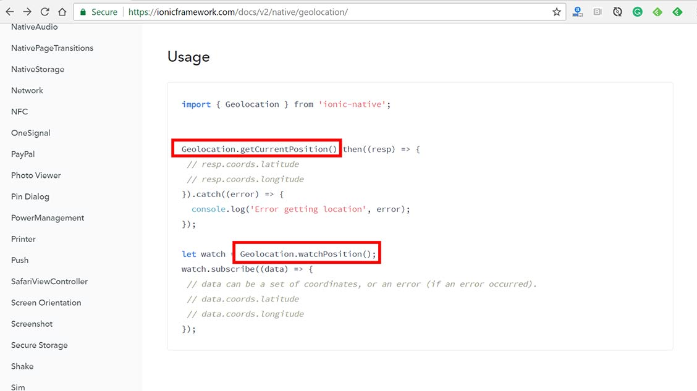
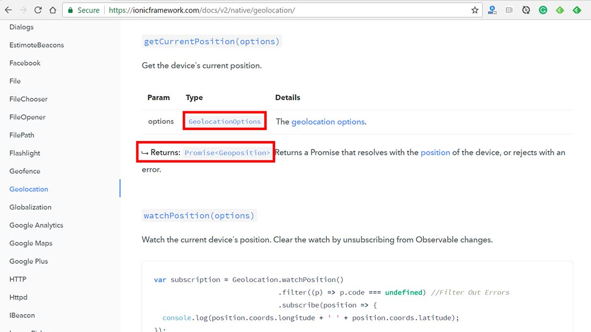
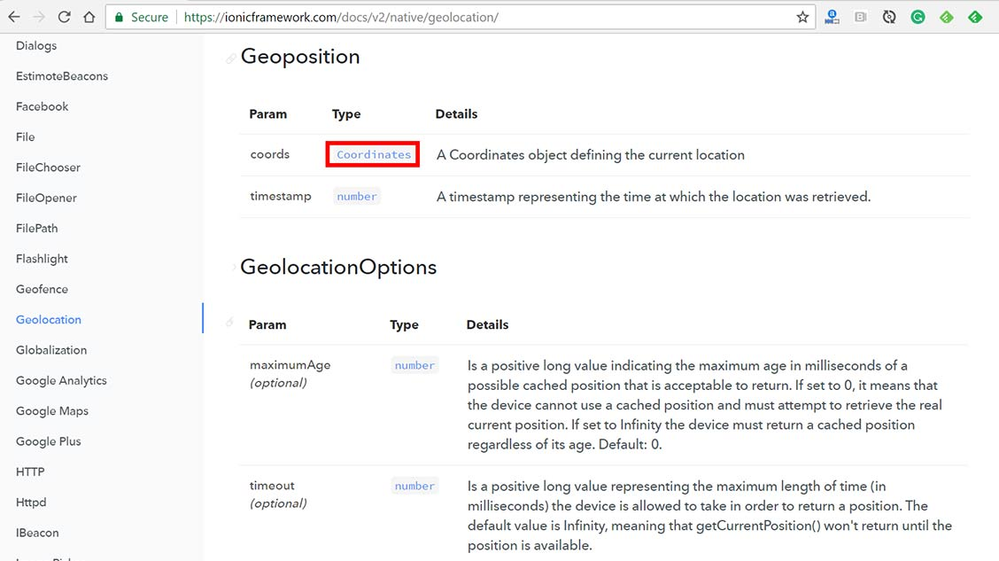
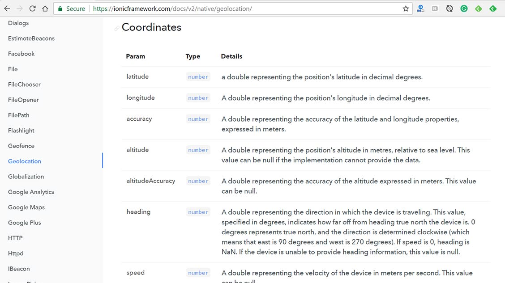
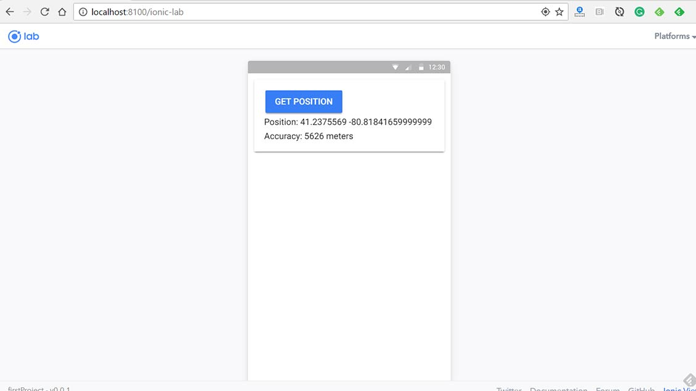

Ionic Native is a set of plugins that you can install within your Ionic project, that give you access to native functionality and more.
In Ionic 2, ionic-native is included by default when you use the Ionic CLI to generate a project.
In this tutorial, we're going to discover how to install and use Ionic native plugins.
If you wish to follow along, make sure you have a new project installed with the Ionic-CLI. If you're following along from the beginning of the free ionic course, you can skip this step.
In the console, type:
$ ionic start geoShow blank
$ cd geoShowAfter it finishes the installation, cd into the geoShow folder.
Installing a native plugin is made easy with the Ionic-CLI. The format is as follows (don't type this):
ionic plugin add plugin-nameWhen this command is finished running, it places the plugin in the /plugins folder inside of the project root.
After a plugin has been installed, usage is fairly straight forward.
Select the intended component file that will use the plugin, and then we add the plugin as an import:
import {NativePlugin1, NativePlugin2, etc.. } from 'ionic-native';As you can see, you can add multiple Ionic Native plugins within a single import statement. These native plugins will always be added from ionic-native.
After a plugin has been imported, you're then free to use it in your component class. The documentation provides you with a Usage example, along with any associated methods and options associated with the plugin.
Visit the official Ionic Native documentation, this will provide you with a list of the available native plugins. Let's say for example that we wanted to display a user's current GPS coordinates. We would use the Geolocation plugin.
From the documentation, we can see that it shows us the command for installing it. So let's do that at the console in our project folder:
$ ionic plugin add cordova-plugin-geolocationNext, let's head on over to our /src/pages/home.ts file and import it at the top:
import { Geolocation } from 'ionic-native';Over at the Geolocation documentation:

It shows us how to use it. In this case, it gives us 2 examples because this plugin has 2 methods (under static members) that we can use: .getCurrentPosition() and .watchPosition(). Let's look at .getCurrentPosition() as an example of how to understand the documentation so we can learn how to use it.

Here we can see that this method accepts options which is described as type GeolocationOptions. We can also see that it Returns a Promise <Geoposition>. Well, what do either of those even mean?
If you scroll down in the documentation further, you'll find sections for both GeolocationOptions and Geoposition

Notice that the GeolocationOptions are all optional, we don't have to pass any of these.
Also, notice that under Geoposition, a type of Coordinates. This is also defined in the documentation:

All of these parameters are returned to us through the coords parameter. This is how we can get a person's location, altitude, speed, etc..
In our home.ts file, add:
export class HomePage {
coords: any;
accuracy: any;
error: any;
constructor() {}
watch() {
Geolocation.getCurrentPosition().then((resp) => {
this.coords = resp.coords.latitude + ' ' + resp.coords.longitude;
this.accuracy = resp.coords.accuracy + ' meters';
}).catch((error) => {
this.error = 'Error getting location: ' + error;
});
}
}
So, we're defining 3 properties coords, accuracy, and error. Then, we're creating a watch() method uses the getCurrentPosition() method of Geolocation.
If it's successful, we define coords and accuracy to the response. Per the documentation, we know that the response will contain a coords object with .latitude, .accuracy, and others.
In the home.html template, paste in this HTML:
<ion-card>
<ion-card-content>
<button ion-button (click)="watch()">Get Position</button>
<p>Position: {{ coords }}</p>
<p>Accuracy: {{ accuracy }} meters</p>
<p *ngIf="error">{{ error }}</p>
</ion-card-content>
</ion-card>In the console, type:
$ ionic serve -lThis gives us the following result:

The accuracy is really off, likely because I'm on a desktop. If you want to preview it on your phone, you will need to use the ionic run device (device could either be android or ios).
On my android phone, the accuracy is 18 meters.
You may find that during the course of development, that you may amass a bunch of unused plugins.
After removing any references to the plugin in your code, in the console type:
$ ionic plugin remove plugin-nameThis will remove the plugin folder from /plugins as well as from any devices that have been added to the project.